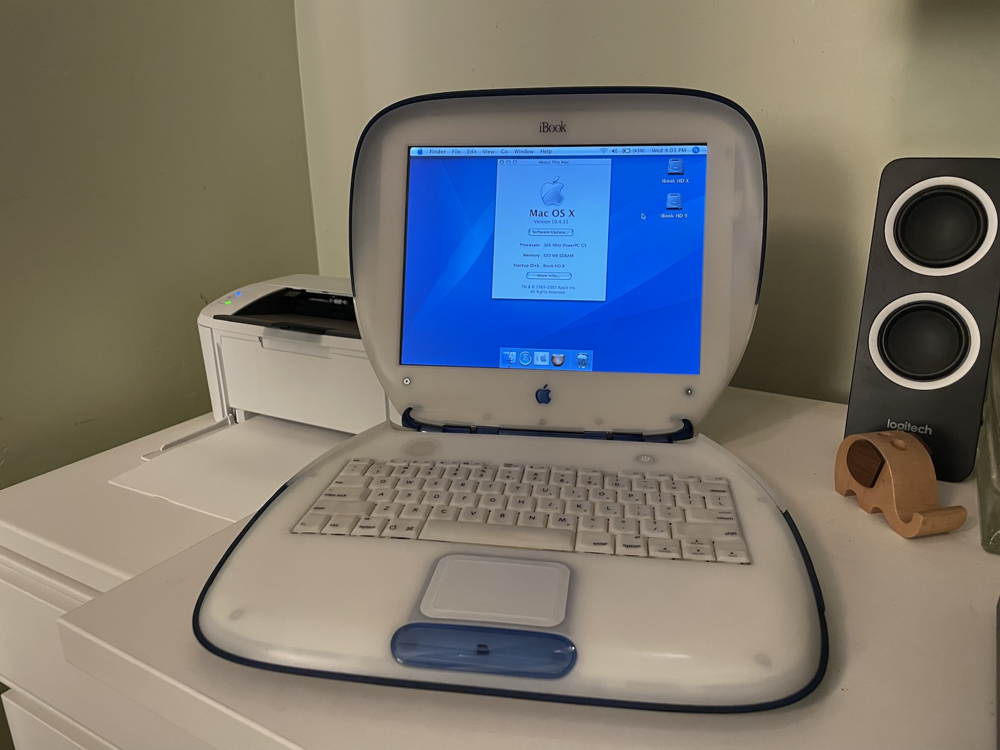
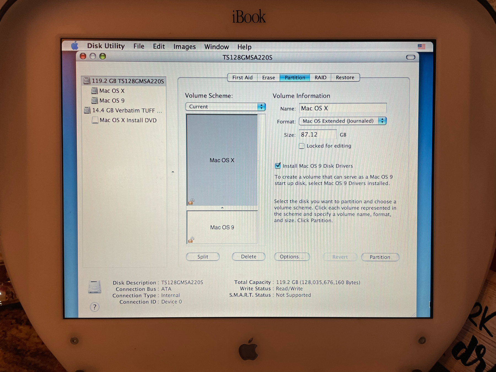
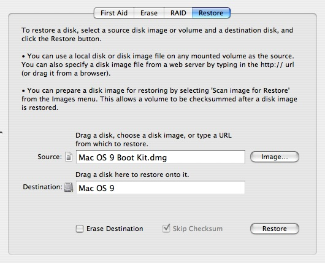
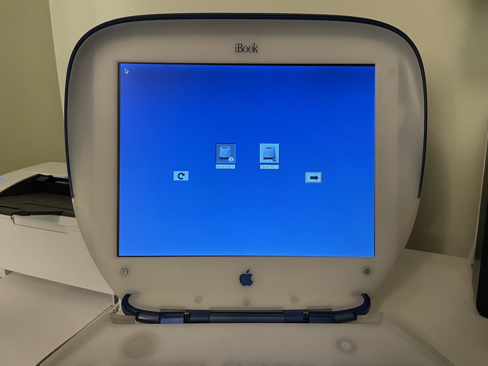

Install OS X and OS 9 on an iBook G3 clamshell with a thumb drive
There's no need to struggle with burning multiple CDs, and yes, your Blueberry and Tangerine can run Mac OS X Tiger! Follow along and you'll be swimming in Aqua in no time. Follow every step of this guide and you'll be able to dual-boot OS 9 as well!

Requirements
- The Tiger install DVD .iso image from Archive.org
- The Mac OS X 10.4.11 Combo Update (PPC) .dmg file from Apple
- A modern Mac running macOS, logged into an admin account
- A 4GB USB thumb drive (USB 2.0 is OK) like these in a color that matches your iBook or these sleek metal ones
- A USB-A to USB-C adapter to plug the thumb drive into your modern Mac
Installing an SSD
First and foremost, you're going to want to replace the internal drive with a high-capacity, high-speed SSD so you'll have plenty of room for activities. You'll need two parts:
Note: Don't cheap out and get a brand like Dogfish, or you'll suffer from crashes on wake! Stick to the known-compatible SSD!
You'll need a couple tools for this job:
- 5mm hex nut driver
- A decent set of precision screwdrivers
- A paperclip
- A crushed ice tray to hold screws (I swear by this and use it every time I disassemble an iBook)
Follow the iFixIt guide to swap the hard drive out. As you follow the guide, use one row of the crushed ice tray for each step and one column for each different screw type mentioned in the step, then go backwards to reassemble. With this technique, you're guaranteed to never screw your screws up!
Making the bootable thumb drive
First, download the Tiger install DVD .iso. It'll show up in ~/Downloads.
Then, plug your USB thumb drive into your modern Mac using your USB-A to USB-C adapter.
Next, open Terminal and type the following command:
diskutil list
Generally, your thumb drive will be the last entry and will say (external, physical):
/dev/disk9 (external, physical):
#: TYPE NAME SIZE IDENTIFIER
0: UNTITLED *15.5 GB disk9
Remember the value under IDENTIFIER -- that's how we'll refer to the disk going forward. In my case, it's disk9.
Then, we'll unmount the disk to get it ready to copy (be sure to replace diskX with your disk identifier):
sudo diskutil umountDisk /dev/diskX
Next, we'll copy the .iso to the raw disk using dd. Again, be sure to replace diskX with your disk identifier.
sudo dd bs=1m if=~/Downloads/MacOSX.4.iso of=/dev/rdiskX
This can take around 15 minutes. At any time, you can press ⌃ + T (Control + T) to see progress.
When it's done, you'll see something like this:
3615+1 records in
3615+1 records out
3791523840 bytes transferred in 852.228331 secs (4448953 bytes/sec)
And your thumb drive will mount up as Mac OS X Install DVD on your desktop!
But you're not done yet, it's time to modify the installer to work on your old iBook!
Modifying the thumb drive to install on older iBooks
Your new USB thumb drive will install nicely on any Firewire equipped iBook, but if you want to boot it on older Apple hardware, you'll need to modify a file inside of the OSInstall.mpkg.
Open the file directly in TextEdit with the following command:
open -a TextEdit /Volumes/Mac\ OS\ X\ Install\ DVD/System/Installation/Packages/OSInstall.mpkg/Contents/OSInstall.dist
Find the line that looks like this:
function checkSupportedMachine(machineType){
var badMachines = ['iMac','PowerBook1,1','PowerBook2,1',
'AAPL,Gossamer', 'AAPL,PowerMac G3', 'AAPL,PowerBook1998',
'AAPL,PowerBook1999'];
Remove everything between [ and ] so it looks like this, then save changes:
function checkSupportedMachine(machineType){
var badMachines = [];
Preparing files to update to 10.4.11
Download the Mac OS X 10.4.11 Combo Update (PPC) .dmg file, then copy it to your thumb drive.
After the install is complete, we'll simply mount this disk image and run the updater.
Preparing files to install Mac OS 9 (optional)
Download the Mac OS 9 Boot kit, unzip the file, rename it so it has a .dmg extension, then copy it to your thumb drive.
Adding software
I like to include a few pieces of software from Macintosh Garden on my thumb drive so I can get started using my fresh iBook right away. Download whatever you need and drag it to your thumb drive!
Note: Be sure to leave at least 20 MB of free space on your thumb drive or you may find that the installer never boots. When this happens, verbose mode (hold ⌘ + V when booting) will show a message saying that /private/var/tmp is full. If this happens, simply delete some of your extra software and it will boot right up.
Booting your thumb drive
Using the the new probe-usb boot method, we can boot your new installer thumb drive on any G3 Mac:
First, plug the thumb drive into your iBook.
Next, power the iBook on and immediately hold ⌘ + ⌥ + O + F (Command + Option + O + F) until the machine boots into OpenFirmware and shows a command prompt.
Finally, type this (exactly as written!) and hit Enter:
probe-usb boot usb0/disk:3,\\:tbxi
Your iBook will then begin to boot the Mac OS X installer!
But before you rush through the wizard, partition your drive to dual boot OS X and OS 9!
Partitioning your drive to dual-boot OS X and OS 9
If you plan on dual-booting, I recommend using Disk Utility in the installer to partition your drive to have two separate partitions. This way, you can hold down ⌥ (Option) after powering on your machine to choose which OS to boot.
Note: Obviously, this erases everything on your iBook's hard drive.
- Select
Utilities->Disk Utilityfrom the main menubar - Click your internal drive in the left pane
- Click the
Partitiontab - Select
Volume Scheme:2 Partitions - Click on the first partition, set its name to
Mac OS X - Click on the second partition, set its name to
Mac OS 9 - Use the slider to give
Mac OS X3/4 or more of the drive space (even 8GB is plenty for OS 9) - Check the
Install Mac OS 9 Disk Driverscheckbox - Click the
Partitionbutton

Then, continue with the installation as normal.
Updating to 10.4.11
After your install it complete (remember, you can skip registration with ⌘ + Q), double click your Mac OS X Install DVD thumb drive on the desktop, then double click the MacOSXUpdCombo10.4.11PPC.dmg file.
Follow the wizard, let it reboot, and you're done!
Installing OS 9 (optional)
Download the Mac OS 9 Boot kit, unzip the file, rename it so it has a .dmg extension, then, boot into your Mac OS X installation and use Disk Utility to restore it to your Mac OS 9 partition.

After that, run the following command to bless the System file:
bless --folder /Volumes/Mac\ OS\ 9/System\ Folder/ --setBoot
Then, you'll be able to boot into either Mac OS X or Mac OS 9 by holding ⌥ (Option) after powering on your machine:
